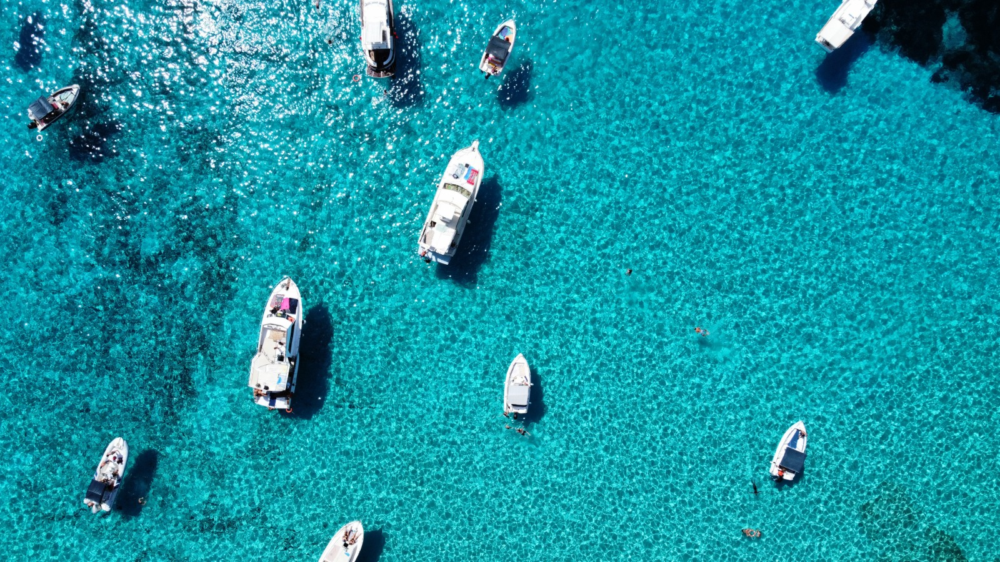
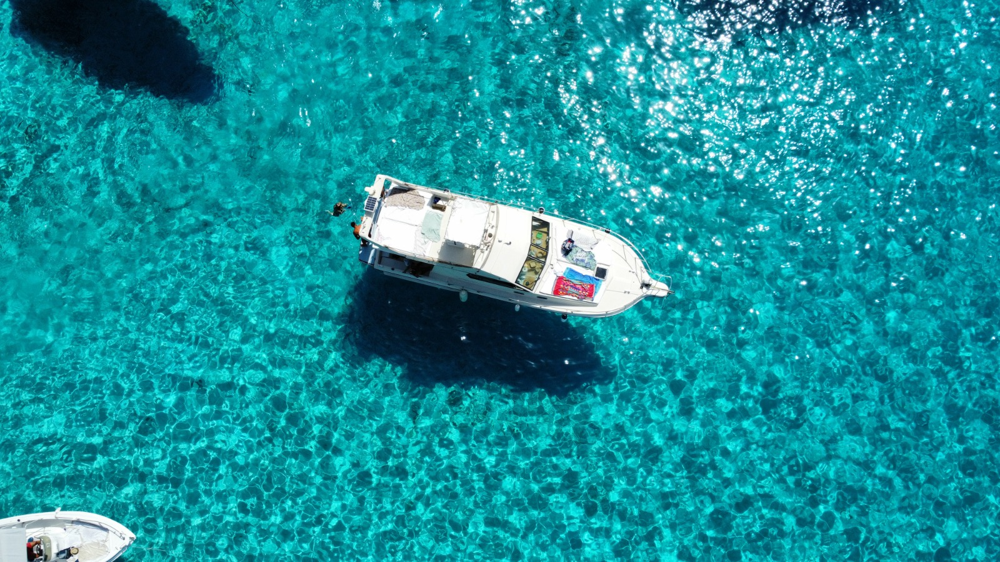

Calette raggiungibili solo dal mare, acque cristalline, tramonti da sogno. Un'isola da vivere fino in fondo.
☎ Prenota ora – 333 811 8541Chi siamo
La gita in barca è un'esperienza che permette di scoprire nuovi paesaggi dal mare, immergendosi nella tranquillità delle acque e nella bellezza della natura circostante.
Si parte dal porto con una vista panoramica sulle coste e calette attorno all'isola. Lungo il tragitto ci si gode il panorama, si ascolta il rumore delle onde e ci si immerge nelle acque più belle del Mediterraneo.
È possibile organizzare anche gite esclusive su richiesta.
Le nostre esperienze

Partenza alle 10:00 per una giornata indimenticabile alla scoperta delle calette più belle, molte raggiungibili solo in barca: la Baia della Tabaccara, Cala Pulcino e la costa nord (in base alle condizioni meteo). Soste per nuotare nelle acque cristalline, pranzo con specialità del posto e bevande incluse. Rientro in porto verso le 17:00.
Partenza alle 18:30 per assaporare uno dei momenti più belli della giornata. Tramonto direttamente dal mare accompagnato da un aperitivo con spritz e stuzzichini, buona musica e — con un po' di fortuna — la possibilità di avvistare delfini e tartarughe. Sosta bagno serale, rientro in porto verso le 21:30.
Vuoi un'esperienza su misura? È possibile organizzare gite esclusive per gruppi o famiglie su preventiva richiesta. Scegli mete, orari e cosa includere a bordo. Contattaci per personalizzare la tua giornata in mare.
Galleria

Prenota ora
Per prenotazioni, costi e informazioni contattaci direttamente. Disponibilità limitata — meglio prenotare in anticipo.